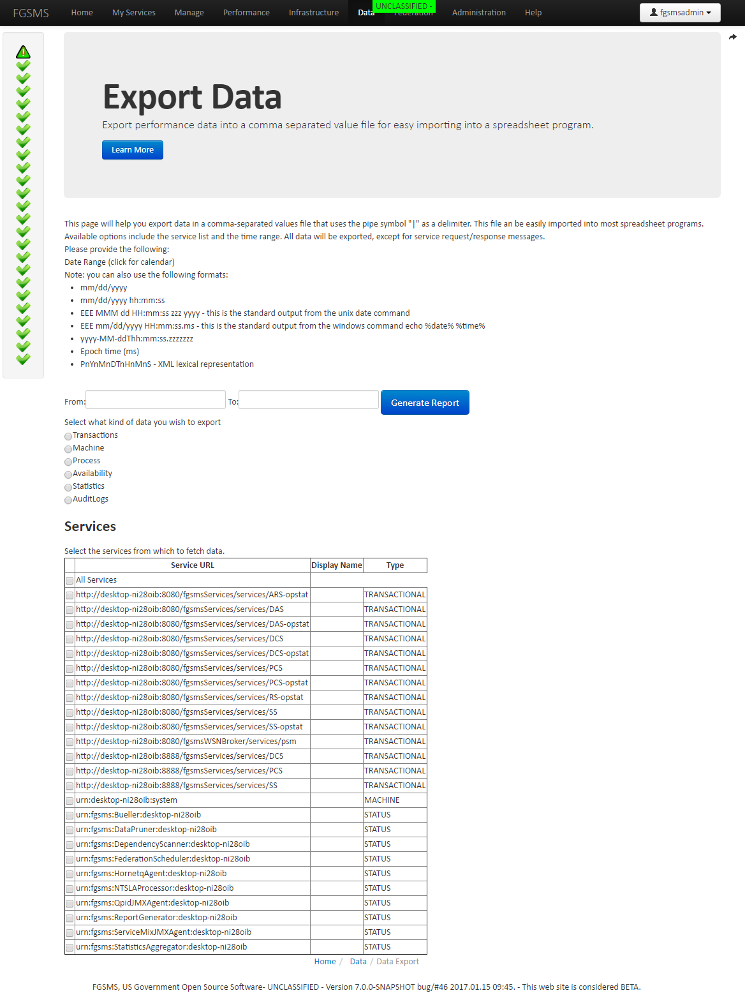

FGSMS provides a number of ways to get data out of system. It’s your data after all.
FGSMS provides a wide array of stylized HTML reports out of the box that you can use to generate reports. These reports are can be generated on demand or in a periodic basic via the automated report generator service. Both of these functions can be accessed via the web user interface.

| Report Type | Applies to | Notes |
|---|---|---|
| AverageResponseTimeByService | Web services | X axis is time, Y axis is response time |
| AverageResponseTimeByServiceByMethod | Web services | |
| AverageMessageSizeByService | Web services | X axis is service, Y axis is average message size |
| AverageMessageSizeByServiceByMethod | Web services | |
| ThroughputByService | Web services | X axis is service, Y axis is throughput (bytes total of all messages/time) |
| ThroughputByServiceByMethod | Web services | |
| TotalMessageSizesByService | Web services | X axis is service, Y axis is bytes total for all messages |
| TotalMessageSizesByServiceByMethod | Web services | |
| ThroughputByHostingServer | Web services | X axis is host, Y axis is is throughput (bytes total of all messages/time for a given host) |
| SuccessFailureCountByService | Web services | X axis is time, Y axis is response time |
| SuccessFailureCountByServiceByMethod | Web services | |
| SuccessFailureCountByHostingServer | Web services | Aggregated amongst all web transactions on a given host |
| InvocationsByHostingServer | Web services | (success + failure counts) by host |
| ResponseTimeOverTime | Web services | X axis is time, Y axis is response time |
| InvocationsByDataCollector | Web services | Used for load balancing agents traffic to FGSMS |
| InvocationsByService | Web services | |
| InvocationsByServiceByMethod | Web services | |
| InvocationsByConsumer | Web services | Aggregated agaisnt all web service traffic, by client username or ip address |
| InvocationsByConsumerByService | Web services | Useful for identifying customers or consumers that are producing more traffic than others |
| InvocationsByConsumerByServiceByMethod | Web services | |
| MTBFByService | Web services | |
| AvailabilityByService | All | For all monitored components that support status reporting. For web services, this is limited by the ability for the Bueller component to a) connect to the service and b) authenticate to it. |
| MemoryUsageByTimeService | OS and process | System and processes, X axis is time, Y is Memroy% in use |
| DiskIOUsageByTimeService | OS | System level, X axis is time, Y is I/O rate |
| DiskFreeSpaceUsageByTimeService | OS | System level, X axis is time, Y axis free disk space host/partition |
| OpenFilesByTimeService | Process | System level, X axis is time, Y axis open file handle count |
| CPUUsageByTimeService | OS and process | System and processes, X axis is time, Y is CPU% in use (all cores) |
| NetworkUsageByTimeService | OS | System level, X axis is time, Y is I/O rate |
| ThreadCountByTimeService | Process | System level, X axis is time, Y is threads in use |
| QueueTopicCountByService | Broker | X axis is time, Y is queue/topic count |
| ConsumersByQueueTopic | Broker | X axis is time, Y is customer count |
| QueueDepthByQueueTopic | Broker | X axis is time, Y is queue depth |
Data can be exported via the web user interface via the Data link on the navigation menu. This allows you to export and filter information based on what you need. Output is Excel/Spreadsheet friendly CSV formats that loosely matches the database schema.

Check out the SDK and some the sample projects, and the Command Line Interface.
FGSMS’s database schemas were designed to be simple and easy to understand. There are two database Configuration and Performance. The Config database contains a minimal set of information related to service policies, machine level information from the OS agent, SLA subscriptions, emails, permissions, etc. The Performance database has all of the raw data that you’re probably looking for. There is a third database for Quartz jobs, which basically enables a number of timed jobs to execute concurrently and pooled across multiple servers. This helps enable FGSMS to scale.
Here’s a general description of the tables what’s in them
| Table | Description |
|---|---|
| rawdata | all web service transactions logs |
| actionlist | all unique actions seen by a web service agent |
| agg2 | aggregated statistics for web service transactions |
| alternateurls | a collection of URLs that a given service has been access by, such as via load balancing scenarios, alternate URLs, DNS entries, etc |
| arsjobs | automated reporting jobs |
| arsreports | outputs from the automated reporting service |
| availability | availability logs for all services |
| broker history | broker historical data |
| brokerrawdata | current broker data |
| dependencies | web service chaining by action type and url |
| rawdata | raw web service performance data |
| rawdatadrives | raw os agent data for drives |
| rawdatamachienprocess | raw data for os agent system and process data |
| rawdatanic | raw os agent data for network cards |
| rawdatatally | a quick lookup table for raw success/fail counts for web service transactions, updated by stored SQL procedures and triggers. |
| slaviolatiosn | all SLA rule violations |
| statusext | extend status information, reserved for future use |